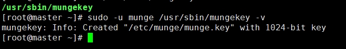
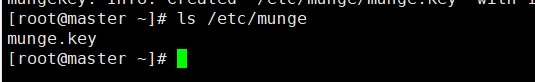
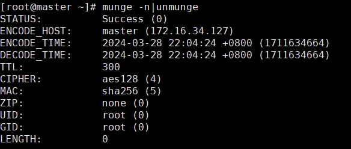
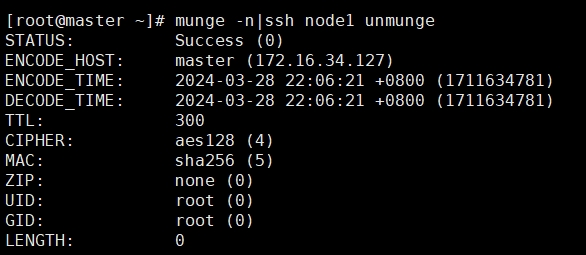
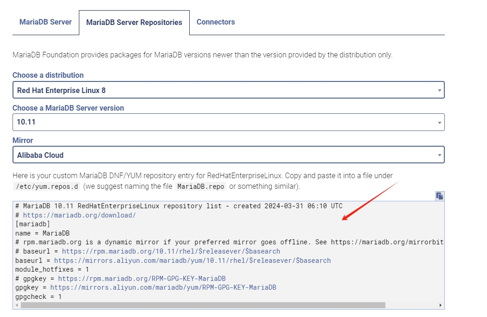

Centos8集群Slurm作业管理系统安装（二）
munge和mariadb软件的安装
munge的简介
munge是主要功能是认证服务，在大规模高性能计算集群中，用于生成和验证证书。slurm官方推荐使用munge作为slurm作业调度系统的认证服务，用于主控节点和计算节点之间的认证通信。配置时分为服务端和用户端，其中服务端应作为slurm调度服务的主控节点，用于管理认证服务。
master节点的安装
- 确保master节点没有安装过 munge
yum remove munge munge-libs munge-devel -y
userdel -r munge - 安装相关的软件
安装 epel-release
yum install -y epel-release
安装 rpmbuild
yum install -y rpm-build - 因为munge安装后会自动创建munge用户，所以我们要提前创建munge用户，并且保证所有节点的munge用户的uid和gid相同
export MUNGE_USER=2024
groupadd -g $MUNGE_USER munge
useradd -m -c "MUNGE User" -d /var/lib/munge -u $MUNGE_USER -g munge -s /sbin/nologin munge - 前往官网下载最新的munge，我这里下载的是munge-0.5.16的版本，并上传，编译RPM包
安装相关依赖
yum install -y bzip2-devel gcc openssl-devel zlib-devel
编译RPM包
rpmbuild -tb --without verify munge-0.5.16.tar.xz - 安装 munge
cd /root/rpmbuild/RPMS/x86_64
yum localinstall -y munge-0.5.16-1.el8.x86_64.rpm munge-libs-0.5.16-1.el8.x86_64.rpm munge-devel-0.5.16-1.el8.x86_64.rpm
复制到共享区，计算节点也需要安装
mkdir /opt/munge_dir
cp munge-0.5.16-1.el8.x86_64.rpm munge-libs-0.5.16-1.el8.x86_64.rpm munge-devel-0.5.16-1.el8.x86_64.rpm /opt/munge_dir - 创建munge.key文件，生成的文件在 /etc/munge下
产生munge.key文件
sudo -u munge /usr/sbin/mungekey -v
 - 修改相关文件和文件夹的所属权限
chown munge: /etc/munge/munge.key
chmod 400 /etc/munge/munge.key
chown -R munge: /var/lib/munge
chown -R munge: /var/run/munge
chown -R munge: /var/log/munge - 启动服务并设置为开机自启
systemctl start munge
systemctl enable munge
计算节点的安装
- 确保计算节点没有安装过 munge
yum remove munge munge-libs munge-devel -y
userdel -r munge - 安装相关的软件
安装 epel-release
yum install -y epel-release
安装 rpmbuild
yum install -y rpm-build - 因为munge安装后会自动创建munge用户，所以我们要提前创建munge用户，并且保证所有节点的munge用户的uid和gid相同
export MUNGE_USER=2024
groupadd -g $MUNGE_USER munge
useradd -m -c "MUNGE User" -d /var/lib/munge -u $MUNGE_USER -g munge -s /sbin/nologin munge - 安装 munge
cd /opt/munge_dir/
yum localinstall munge-0.5.16-1.el8.x86_64.rpm munge-libs-0.5.16-1.el8.x86_64.rpm munge-devel-0.5.16-1.el8.x86_64.rpm - 把master节点的munge.key 发送到计算节点
scp /etc/munge/munge.key root@node1:/etc/munge/
- 设置相关权限
chmod 700 /etc/munge
chown -R munge: /etc/munge
chown -R munge: /var/lib/munge
chown -R munge: /var/run/munge
chown -R munge: /var/log/munge - 启动相关服务，并设置开机自动启动
systemctl start munge
systemctl enable munge
进行验证
master节点输入 |

说明master节点的munge安装成功
服务节点输入 |

说明计算节点的munge安装成功
mariadb的简介
MariaDB Server 是一个通用的开源关系数据库管理系统。 它是世界上最受欢迎的数据库服务器之一，拥有包括 Wikipedia、WordPress.com 和 Google 在内的知名用户。 MariaDB Server 在 GPLv2 开源许可下发布，并保证保持开源。它可用于高可用性事务数据、分析、作为嵌入式服务器，并且广泛的工具和应用程序支持 MariaDB Server。
mariadb的安装
- 确保控制节点和计算节点都没有安装过mariadb
yum list installed mariadb
如果有就卸载
yum -y remove mariadb* - 前往mariadb的官网，获取相应版本的yum源，并复制。我这里用的是10.11版本，使用的是阿里源。
 - 添加 yum 源
vi /etc/yum.repos.d/mariadb.repo
添加相应的yum源，添加
MariaDB 10.11 RedHatEnterpriseLinux repository list - created 2024-03-31 06:10 UTC
https://mariadb.org/download/
[mariadb]
name = MariaDB
rpm.mariadb.org is a dynamic mirror if your preferred mirror goes offline. See https://mariadb.org/mirrorbits/ for details.
baseurl = https://rpm.mariadb.org/10.11/rhel/$releasever/$basearch
baseurl = https://mirrors.aliyun.com/mariadb/yum/10.11/rhel/$releasever/$basearch
module_hotfixes = 1
gpgkey = https://rpm.mariadb.org/RPM-GPG-KEY-MariaDB
gpgkey = https://mirrors.aliyun.com/mariadb/yum/RPM-GPG-KEY-MariaDB
gpgcheck = 1
执行
yum clean all && yum makecache
发送到计算节点
scp /etc/yum.repos.d/mariadb.repo node1:/etc/yum.repos.d/
在计算节点执行
yum clean all && yum makecache
yum clean all 的主要作用是清除所有已下载软件包和元数据（metadata）以及临时文件的缓存
yum makecache的作用是将服务器上的软件包信息缓存到本地，以提高搜索和安装软件的速度 - master节点安装
yum install -y mariadb mariadb-server mariadb-devel MariaDB-backup
- 计算节点安装
yum install -y MariaDB-common MariaDB-compat libyaml
- master 节点配置
启动数据库，并开机自动启动
systemctl enable --now mariadb
mariadb-secure-installation
配置数据库
Enter current password for root (enter for none): 回车
Switch to unix_socket authentication [Y/n] n
Change the root password? [Y/n] y
New password:
Remove anonymous users? [Y/n] 回车
Disallow root login remotely? [Y/n] n
Remove test database and access to it? [Y/n] 回车
Reload privilege tables now? [Y/n] 回车
配置数据库
mysql -u root -p
创建一个新用户slurm,密码是123456,并指定使用localhost本地权限.
create user 'slurm'@'localhost' identified by '123456';
生成slurm用户,其密码是123456，可自行设定,并开启%远程登录
create user 'slurm'@'%' identified by '123456';
生成账户数据库slurm_acct_db
create database slurm_acct_db;
赋予slurm从本机localhost采用密码123456登录具备操作slurm_acct_db数据下所有表的全部权限
grant all on slurm_acct_db.* TO 'slurm'@'localhost' identified by '123456' with grant option;
创建slurm用户并给予%远程登陆的权限,并对slurm_acct_db数据库全部授权
grant all on slurm_acct_db.* TO 'slurm'@'%' identified by '123456' with grant option;
生成作业信息数据库slurm_jobcomp_db
create database slurm_jobcomp_db;
赋予slurm从本机localhost采用密码123456登录具备操作slurm_jobcomp_db数据下所有表的全部权限
grant all on slurm_jobcomp_db.* TO 'slurm'@'localhost' identified by '123456' with grant option;
创建slurm用户并给予%远程登陆的权限,并对slurm_jobcomp_db数据库全部授权
grant all on slurm_jobcomp_db.* TO 'slurm'@'%' identified by '123456' with grant option;
#保存配置
flush privileges;
#退出
exit; - 可以修改数据库的配置文件 /etc/my.cnf 。我这里就不修改了。
参考
本博客所有文章除特别声明外，均采用 CC BY-NC-SA 4.0 许可协议。转载请注明来自 哆啦酱的点心屋！
相关推荐


评论